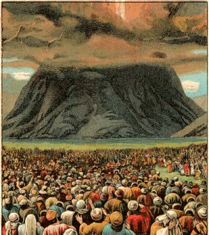
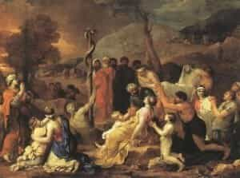
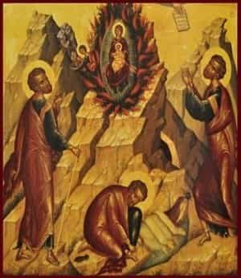
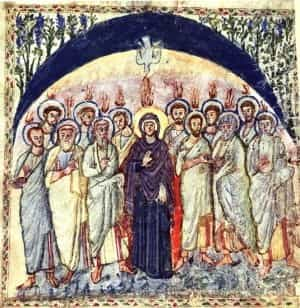

< < < Back
The Significance Of The Feast Of Pentecost – Return Of Kings
For you are not come to a mountain that might be touched, and a burning fire, and a whirlwind, and darkness, and storm, and the sound of a trumpet, and the voice of words, which they that heard excused themselves, that the word might not be spoken to them; for they did not endure that which was said: “and if so much as a beast shall touch the mount, it shall be stoned.” And so terrible was that which was seen, that Moses said “I fear and tremble.” But you are come to mount Sion, and to the city of the living God, the heavenly Jerusalem, and to the company of many thousands of angels, and to the Church of the firstborn, who are written in the heavens, and to God the judge of all, and to the spirits of the just made perfect, and to Jesus the mediator of the new testament, and to the sprinkling of blood which speaketh better than that of Abel.
As the Pentecost cycle of the Synagogue (i.e., the Jews) treats of the core elements of the Old Covenant, so the Pentecost cycle of the Church exposits the core mysteries of the New Covenant, and the realization of the reconciliation between God and man. Let us interrupt our course on philosophy one week more, to look at this Feast and how it corresponds to what transpired more anciently.

God Occludes Himself atop Sinai
Pentecost and the Law
In the Old Testament, the Passover was when the Angel of the Lord “passed over” the Hebrews’ homes, slaying the firstborn of Egypt. Fifty days later, the liberated Hebrews arrived at Mount Sinai and received the Law. Hence this festival is called Shavuot in Hebrew, or “Weeks,” because it is a week of weeks (i.e., seven weeks) after Passover.
The Pentecost of the Old Covenant is an “antitype” of the Pentecost of the New Covenant. The term “antitype” refers to how a stamp is made in the mirror image of its desired impression. Thus does the Old Testament point forward to the New, with events of either Pentecost mirroring the other. Moses, the prophet of the Old Law, received it on the Pentecost after Pesach (Passover); Jesus, the fulfiller of the Old Law, gave a New Law on the Pentecost after Pascha (Easter). Jesus the Christ ascended to God on the 40th day after Pascha; Moses descended from God on the 40th day after Pentecost. Moses, leading the other Levites, killed 3000 idolaters on the ancient Pentecost; St. Peter, leading the other Apostles, converted 3000 devout Jews to eternal life, who had come to worship God on the festival.
The Old Law was written upon dead stones and emphasized the separation between the people and God, forbidding them to approach the mountain and being set in the Ark of the Covenant which the people could not touch; the New Law was not written down, but descended upon the true Ark of the Covenant (the Blessed Virgin, who bore the Word of God and the Manna from heaven in her womb), and upon all the Apostles and disciples who were gathered together in the high place of the upper room on mount Sion.
This latter point (of direct contact between God and man) is very important. The whole book of Hebrews dwells on the fulfillment of the Law in the Gospel; quoting in part from Jeremiah’s prophesy of this new covenant (or testament), St. Paul says:
And this is the testament which I will make unto them after those days, saith the Lord. I will give my laws in their hearts, and on their minds will I write them: and their sins and iniquities I will remember no more. Now where there is a remission of these, there is no more an oblation for sin. Having therefore, brethren, a confidence in the entering into the holies by the blood of Christ; a new and living way which he hath dedicated for us through the veil, that is to say, his flesh, as a high priest over the house of God, let us draw near with a true heart in fulness of faith, having our hearts sprinkled from an evil conscience, and our bodies washed with clean water. – Hebrews 10:16-22

Moses and the Brazen Serpent, Another Antitype of Christ’s Fulfillment of the Law
This is a matter of stunning importance; in the New Covenant, the Law is not given as a fait accompli, written down in stone or on a page. Rather, God Himself descended upon the Church in the fire of the Holy Ghost, making of each heart a sanctuary, abiding in each soul and giving it the power to fulfill the Law in Spirit and Truth. Of course, this is not to make each person into his own priest, prophet and king, justifying persons in their private opinions about religious truth – the Spirit is given to the whole Body of the Church, and the differing ranks and duties of the members must be honored, all cleaving together in Faith, Hope and Charity by the same Spirit.
But, it certainly is to say that the New Law is a matter of God abiding with men, in and through them guiding the Church in a continuity of faith and activity through the “latter days.” The last days are fully upon us in the Pentecost, for that begins the age in which the estrangement between men and God is overcome; God abides with men, and men begin finally to fulfill His Law in Spirit and Truth, becoming “perfect, as the Father in Heaven is perfect.” St. Peter makes this explicit in his sermon on the Pentecost, again quoting the Old Covenant’s prophets: “it shall come to pass, in the last days, (saith the Lord,) I will pour out of My Spirit upon all flesh: and your sons and your daughters shall prophesy, and your young men shall see visions, and your old men shall dream dreams. And upon my servants indeed, and upon my handmaids will I pour out in those days of My Spirit…”
Indeed, this is another of the more important elements of the Pentecost; let us look at what has happened, again with reference to the times before Christ

Moses Sees the New Covenant Prefigured in the Burning Bush and Receives the Law
In the beginning, when Adam and Eve had sinned in paradise, the Lord ejected them from the garden, and set cherubim before the entrance with whirling swords of flame; they remained biologically alive, but spiritually they had perished—“in what day soever thou shalt eat of it, thou shalt die the death.” On Sinai, God first appears to Moses in the burning bush, smokeless and unconsumed. Later, He hid Himself from the people in fire and smoke, warning that the people would die if they beheld Him or approached.
When God ordained the temple rites, many things indicate that the Temple, and especially the Holy of Holies (the innermost sanctuary) represent paradise. The words for the priests’ service and tending of the temple are the same words used for Adam and Eve’s duties in paradise. He commanded that the Holy of Holies be separated from the rest of the temple by a veil covered with cherubim. Just outside of it was the altar of incense, on which a fire was lit and incense burnt, so that the priest could protect himself with a cloud of smoke “lest he die” (Leviticus 16:13). Outside the Temple itself was the altar of holocausts, which also veiled the face of the temple in smoke. These altars were lit by a fire that had descended from heaven, and which the priests were to tend perpetually.
It is also recorded that men of old tried to bridge this gap once before, with the Tower of Babel. As a punishment, their tongues were confounded and they were unable to attain their aim; moreover, in Jewish tradition the uppermost regions of the tower were destroyed by fire from above. The theme is continual: God and man are estranged; God sets thick smoke and fire between Himself and man; the fire has a dual aspect, alternately punishing and rebuffing or shielding, protecting, purifying.
Fallen man, at the beginning of the 40 days of Lent, hears this: “remember, man, that thou art ash, and to ash thou shalt be returned.” Redeemed, ascended man, 40 days after Easter, prepares to receive the flame of the Paraclete. “Presently the Lord, Whom you seek, and the Angel of the Testament, Whom you desire, shall come to His temple. Behold He cometh, saith the Lord of hosts. And who shall be able to think of the day of His coming? and who shall stand to see Him? for He is like a refining fire.” Indeed, our God is a consuming fire, and behold! On the Pentecost, He falls upon the prepared in cloven tongues of flame! Here is the New Law given and fulfilled in Spirit and Truth. Here the confusion of tongues at Babel is reversed; charity between men, and between men and God, is rekindled. “I have come to cast fire upon the earth,” our Lord said, “and how I wish it were already kindled!” He shall come again to judge the world by this self-same fire, and I tell you plainly, with Pentecost the judgment has already begun. The Kingdom has come, albeit only in part… for now.

Pentecost from a 6th Century Gospel Book
God has cast His fire on the earth, and when the time is ripe it shall become an ineluctable conflagration. Dies irae, dies illa, solvet saeclum in favilla, teste David cum Sibylla (“That day, the day of wrath, blasts the cosmos to cinder and ash; so David and the Sibyll swear”). Our choices and deeds shall determine whether we are reduced to cinders as well, or whether we shall be found to be “not of this world,” and already accustomed to the purifying fire of the divine nature in the tabernacle of our hearts.
He that thinks he stands, let him take heed, lest he fall; for we are unworthy of so great an inheritance. God speed you, men!
Read More: Why Is Modern Christianity So Wimpy?